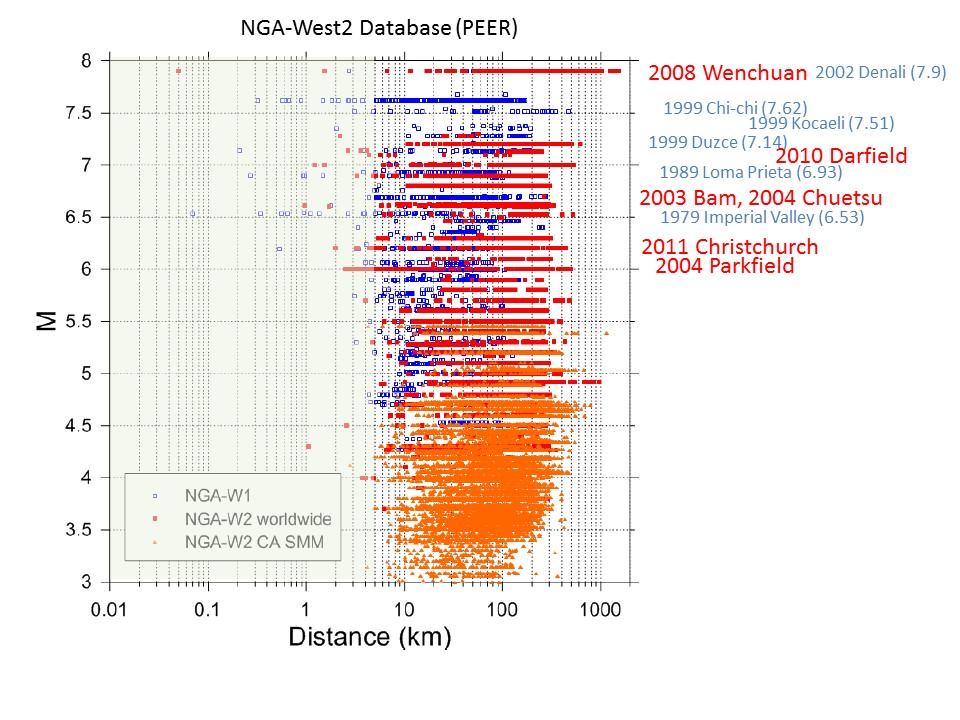

ENS project (2017 - )
I have been officially an associate researcher at Laboratoire de Geologie de l'ENS Paris since January 2017 (about 20% = once a week).
It is very welcome to discuss any topics in Paris. A prior appointment recommended.Current topics
- Multi-scale heterogeneous fault model for earthquake dynamics since Ide and Aochi (2005).
- Kinematic and dynamic modeling of the 2015 Mw8.3 Illapel (central Chile) earthquake.
- Modeling of the 2019 Mw7.1 Ridgecrest (California) earthquake. (not sure yet)
Expected topics
- Near-field Ground Motion and earthquake source dynmaics.

It lacks observations for large earthquakes (M > 6) at near field (distnace < 10 km). How are they? All the earthquakes cited have particularity in detail such as segmentation, geometry change, super-shear rupture and so on. These are the subjects of research.Archieved topics (or almost)
Collaborations
are very welcome and totaly open officially or personally.
- within ENS and IPGP.
- Kobe University, Japan.
- University of Tokyo, Japan.
- Universidad de Chile, Chile.
- some other preliminary possibilities.
Publications
- Aochi, H. and C. Twardzik, Imaging of seismogenic asperities of the 2016 ML6.0 Amatrice, Central Italy, earthquake through dynamic rupture simulations, Pageoph, published on line, doi:10.1007/s00024-019-02199-z, 2019.
- Aochi, H., Dynamic asymmetry of normal and reverse faults due to constrained depth-dependent stress accumulation, Geophys. J. Int., 215, 2134-3243, doi:10.1093/ggy407, 2018.
- Aochi, H. and S. Ide, Role of multi-scale heterogeneity in fault slip from quasi-static numerical simulations, Earth Planet Space, 69, 94, doi:10.1186/s40623-017-0676-5, 2017.
Participations
- AGU fall meeting 2019, San Francisco, CA, USA.
- EGU 2019, Vienna Austlia. Funded by BRGM.
- Short stay for collaboration in Santiago in March 2018. Funded by University of Chile.
- TOUGH symposium in October 2018 in Berkely, CA, USA. Funded by BRGM.
- IAEA workshop in May 2018 in Cadarache, France. Funded by organizer.
- IASPEI 2017 in July-August 2018 in Kobe, Japan. Funded by JSPS-ERI (Japan).
- EGU 2017, Vienna, Austlia. Funded by BRGM.
Created on the 23rd February 2017. Updated on the 12th April 2019. All rights reserved.
Back to Research/Projects page.
Back to Top.